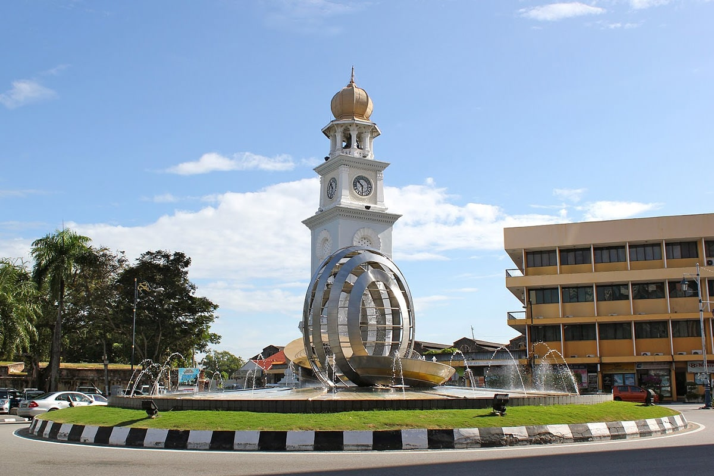
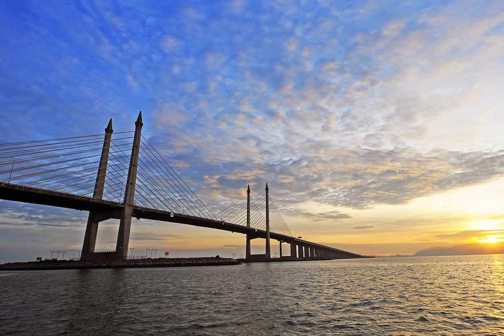
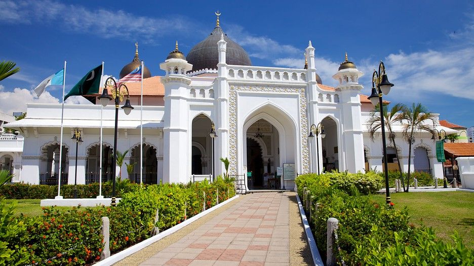

A landmarks are places of interest ,that have become local or national symbols, in which tourists visit, typically for its inherent or a exhibited natural or cultural value, historical significance, natural or built beauty, offering leisure and amusement. Tourists always relate certain landmarks to a city or state, so it is not surprising that Penang is home to many different types of landmarks, making it one of the hottest tourist spots.
Landmarks
Penang Bridge
The Penang Bridge, or 'Jambatan Pulau Pinang' in the local language, is a 13.5 kilometre long bridge and highway connecting the island of Penang and the mainland of the state, Perai, across the Penang Strait. The bridge was inaugurated on 14 September 1985 and it is the first road connection between the peninsula and the island. The bridge is the second longest bridge in Malaysia and the fifth longest in the whole of Southeast Asia. The largest event held here is the Penang Bridge International Marathon, which was established in 1984. It is supported by the State Government of Penang, Penang Tourism Action Council (Penang Tourism), Malaysian Highway Authority (LLM), PLUS Expressways, Jambatan Kedua Sdn Bhd and Municipal Council of Penang Island (Majlis Perbandaran Pulau Pinang (MPPP)). Allianz was the gold sponsor for this event. For more info, click HERE.
KOMTAR Tower

In Georgetown, Penang stands the KOMTAR Tower, Penang's tallest skyscraper, completed with 68 floors and standing at a height of 249 metres. Completed in 1986 after 12 years of construction, it consists of a multipurpose complex, comprising retail outlets and a transportation hub and administrative offices of the Penang state government. KOMTAR is actually an acronym for Kompleks Tun Abdul Razak, as the tower was named after the second Prime Minister of Malaysi ,Tun Abdul Razak bin Hussein Al-Haj. n addition, KOMTAR Tower is home to the Rainbow Skywalk, the highest glass skywalk in Malaysia, which has been installed at the top of the skyscraper and launched in 2016.
Chew Jetty

In the past, Chinese coolies working at the harbour built clan-based seaside settlements at the southern section of Weld Quay. Now known as the Clan Jetties, the wooden piers built by the Chinese were divided between the different surname-based clans, such as Lee, Yeoh and, the most famous of all, Chew. Clan Jetties form part of the Penang Heritage Trail. There used to be seven jetties until one was demolished by fire and now six remain. Billed as one of the last bastions of old Chinese settlements on the island, this waterfront society is home to houses on stilts of various Chinese clans. The Chew Jetty has become one of the focal points of the Chinese New Year celebrations in Penang in recent years.
Masjid Kapitan Keling
The Masjid Kapitan Keling, or the Kapitan Keling Mosque, is a mosque built in the 19th century by Indian Muslim traders in George Town, Penang, Malaysia. It is situated on the corner of Buckingham Street (Lebuh Buckingham) and Pitt Street (Jalan Masjid Kapitan Keling). Being a prominent Islamic historic centre, it is part of the World Heritage Site of George Town and lies at the centre of the city's Tamil Muslim neighbourhood, the chulias. It is the first permanent Muslim institution to have been established in the area, dating from the early 1800s. "Keling" is a Malay term for people of Indian origin, nowadays considered offensive but not so considered at the time when the mosque was built. The "Kapitan " was a representative of the Indian community.
Kek Lok Si Temple

The Kek Lok Si Temple is a Buddhist temple situated in Air Itam, Penang, Malaysia, facing the sea, and is one of the best known temples on the island. It is the largest Buddhist temple in Malaysia, and also an important pilgrimage centre for Buddhists from Hong Kong, the Philippines, Singapore and other countries in Southeast Asia. The entire complex of temples was built over a period from 1890–1930, an inspirational initiative of Beow Lean, the Abbot. The main draw in the complex is the striking seven-storey Pagoda of Rama VI (Pagoda of Ten Thousand Buddhas) with 10,000 alabaster and bronze statues of Buddha, and the 36.57 metres tall bronze statue of Kuan Yin, the Goddess of Mercy. The literal meaning of Kek Lok Si Temple is either "Heavenly temple", "Pure Land Temple", "Temple of Supreme Bliss", or the "Temple of Paradise"